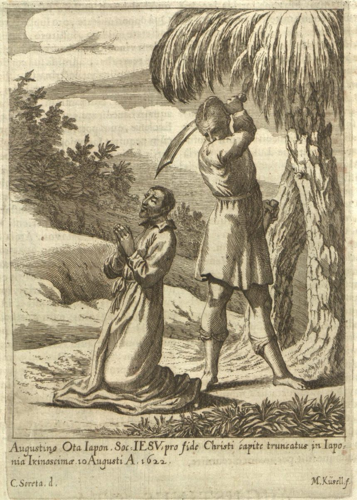
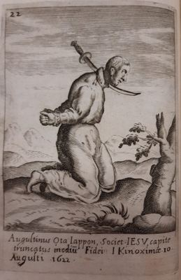

Isusovački blaženici
Brat
Bl. Augustin Ota
1572. – 1622.
Nekadašnji učenik budističkih učitelja postao je kršćanin i suradnik isusovačkih misija. Kao udovac posvetio se naviještanju vjere te je podnio mučeništvo.
Tekst je preveden i prilagođen uz pomoć umjetne inteligencije.

Izvor slike


Izvor slike
- Spomendan
- 10. kolovoza
- Zaštitništvo
- Nije navedeno u izvoru
- Životni vijek
- 1572. – 1622.
- Djelovanje
- Obrazovanje i poučavanje vjere · Obitelj i gubitak bližnjih · Obraćenje i novi počeci · Progoni i progonstvo · Mučeništvo
- Razdoblje
- 16., 17. stoljeće
- Krštenje
- 1585.
- Rođenje — dostupni podaci
- Oko 1572.; dan i mjesec nisu potvrđeni u provjerenom izvoru.
- Mjesto rođenja
- Otok Ojika, Japan
- Datum smrti
- 10.08.1622.
- Mjesto smrti/mučeništva
- Otok Hirado, Japan
- Okolnosti smrti/mučeništva
- Obezglavljen nakon odbijanja odricanja vjere; zavjete položio dan prije smrti.
- Uloga
- Brat
- Mučenik
- Da
- Ostale oznake
- Kateheta; primljen u Družbu u zatvoru
- Pripadnost
- Isusovac
- Drugi oblici imena
- Augustine Ota · Augustine
Životopis
Augustin Ota rođen je oko 1572. na otoku Ojika u otočju Gotō, u nekršćanskoj obitelji. U mladosti je učio u budističkome hramu, a 1585. primio je krštenje po djelovanju isusovaca. Kada je ostao udovac, posvetio se katehezi i upoznavanju sunarodnjaka s kršćanskom vjerom. Poznavanje budističkoga nauka i običaja pomagalo mu je u razgovoru s ljudima kojima su misionari dolazili.
Postao je katehist i putni suradnik Camilla Costanza. Zajedno su obilazili otoke uz zapadnu japansku obalu i dijelove kopna. Singapurski isusovački prikaz precizira da je njihova neposredna suradnja trajala približno četiri mjeseca. Nakon izdaje uhićeni su 24. travnja 1622. na otoku Uku. Do tada je Ota apostolat ostvarivao kao domaći katehist, a u zatočeništvu je zatražio ulazak u Družbu Isusovu.
Pisao je provincijalu i dobio dopuštenje. Costanzo ga je primio u novicijat te prihvatio njegove zavjete dan prije smrti. Ota je 10. kolovoza 1622. pogubljen odrubljivanjem glave, a tijelo mu je bačeno u more. Njegov je svećenik-suradnik ostao još neko vrijeme u zatvoru i stradao zasebno sljedećega mjeseca. Njihove smrti zato pripadaju istomu krugu progona, ali nisu jedan događaj ni isti datum. Ota se u isusovačkoj povijesti pamti kao katehist koji je redovničke zavjete položio na završetku životnoga puta.
Život i nasljeđe
Ota je Costanzu pomagao i na otočnim putovanjima, gdje je domaće poznavanje vjerskih predodžbi bilo posebno važno za razgovor s ljudima. Njegov izbor nije bio samo posljedica obiteljskoga gubitka: nastavio je aktivno poučavati i prije formalnoga redovničkog primanja. Dopuštenje provincijala i primanje zavjeta preko svećenika u zatočeništvu pokazuju kako je Družba mogla razlučivati poziv u izvanrednim prilikama. Njegova smrt i Costanzovo kasnije pogubljenje pripadaju povezanoj misiji, ali ne potpuno istomu događaju.
Tekst je preveden i prilagođen uz pomoć umjetne inteligencije.
Pročitaj više na izvornoj stranici ↗